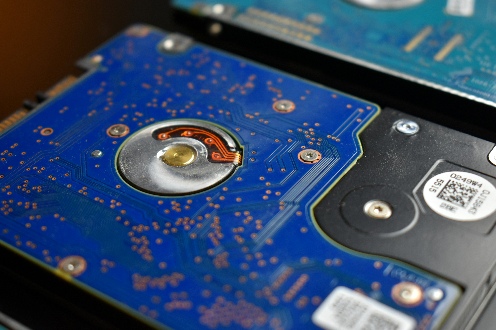
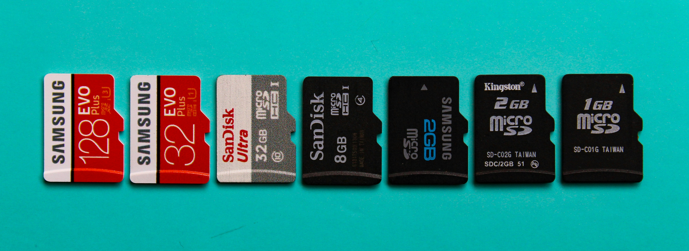

Introduction to Storage Devices:
Storage devices are hardware used to save data, either temporarily or permanently. They play a crucial role in maintaining the data and software we use, enabling the processing and retrieval of information.

Some Popular Storage Devices:
- Hard Disk Drive (HDD): A traditional storage device that uses spinning disks to store data. It has a large capacity but is slower than newer technologies.
- Solid State Drive (SSD): A faster and more reliable storage device that uses flash memory, with no moving parts, making it more durable than an HDD.
- USB Flash Drive: A portable storage device that connects via USB, commonly used for transferring files between computers.
- Optical Discs (CD/DVD): Discs that store data and are read by laser; though less common now, they are still used for specific storage needs.
- Cloud Storage: A digital storage solution where data is saved on remote servers and accessed via the internet, offering convenience and scalability.
Conclusion:
Storage devices are essential for preserving and accessing the data we rely on daily. From traditional HDDs to modern cloud storage, the evolution of storage technology continues to improve data management and accessibility.